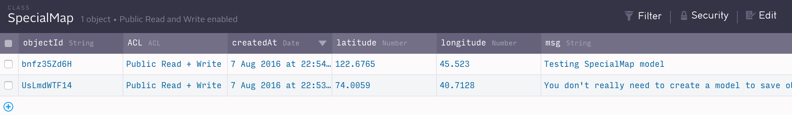

Creating the Marker Model
In the project view of your Android applicaton, we will create a class called SpecialMaps.java that we will use
as a model for our Parse objects.
I like to put models in their own package called "Models" (you can create a new package
by right-clicking app-->java-->com.packagename and selecting new-->package). Just to keep the code organized.
If you created the Models package, you should then right click on Models and select new--> Java class. Name this class
SpecialMap.java. This is going to
be a Java object that we use to interact with our Parse.com data without needing to include all the fancy Parse.com footwork in our
activity code.
Next, paste in this code. I explain how it works in detail a couple sections from now.
import package com.<YourPackageName>.Models;
import android.app.Activity;
import com.parse.FindCallback;
import com.parse.ParseClassName;
import com.parse.ParseObject;
import com.parse.ParseQuery;
import java.util.List;
@ParseClassName("SpecialMap")
public class SpecialMap extends ParseObject {
private static List mSpecialMaps;
/*
This is the default constructor.
NOTE: Android Studio will grey the name out because it doesn't
see it being used, but trust me, if you try to use the other constructor
with our without this here, it will not work:
*/
public SpecialMap(){
super();
}
// Constructor to create with new SpecialMap object:
public SpecialMap(double latitude, double longitude, String msg){
put("latitude", latitude);
put("longitude", longitude);
put("msg", msg);
}
//Save the map
public void saveSpecialMap() {
saveInBackground();
}
//A query that's run in findAllSpecialMaps:
public static ParseQuery specialMapsListQuery() {
return ParseQuery.getQuery(SpecialMap.class)
.orderByAscending("name");
}
/* This function is run with a runnable that's created on the main ui thread
(but we don't need to use a runnable, I'll explain later): */
public static void findAllSpecialMaps(final String tag, final Activity context, final Runnable runnable) {
specialMapsListQuery().findInBackground(new FindCallback() {
@Override
public void done(List specialMaps, com.parse.ParseException e) {
if (e == null) {
mSpecialMaps = specialMaps;
context.runOnUiThread(runnable);
} else {
ErrorHelper.handleError(tag, context, e.getMessage());
}
}
});
}
//This is called in the runnable that's sent into findAllSpecialMaps.
public static List getSpecialMaps() {
return mSpecialMaps;
}
} // end of class
Now let's test the model out.
Add this line inside of the onCreate() method in MainActivity.java to use the class:
ParseObject.registerSubclass(SpecialMap.class);
You only need the above line in one activity-- you can now use the SpecialMaps class we just made in
any activity that you visit after visiting this one. Remember though, the code we added
to onCreate() in the previous section must be deleted, or else that line will crash the app.
Now, below the Parse.registerSubclass line, add the following lines:
SpecialMap newSpecialMap = new SpecialMap(122.6765, 45.523, "Testing SpecialMap model");
newSpecialMap.saveSpecialMap();
If SpecialMap is underlined in red, you need to import the SpecialMap.model class (above the class declaration).
Now run the project and check your database at your dashboard on Parse.com again. If it worked, you should see the new row in the SpecialMap class:

For reference, here is what my MainActivity looks like at this point (I cleaned up stuff like toolbar and floating action button that I didn't use):
package com.example.colleenminor.communitymapexample;
import android.os.Bundle;
import android.support.v7.app.AppCompatActivity;
import android.view.Menu;
import android.view.MenuItem;
import com.example.colleenminor.communitymapexample.Models.SpecialMap;
import com.parse.ParseObject;
public class MainActivity extends AppCompatActivity {
@Override
protected void onCreate(Bundle savedInstanceState) {
super.onCreate(savedInstanceState);
setContentView(R.layout.activity_main);
/**** Register parse subclass and create and save SpecialMap object: ****/
ParseObject.registerSubclass(SpecialMap.class);
SpecialMap newSpecialMap = new SpecialMap(122.6765, 45.523, "Testing SpecialMap model");
newSpecialMap.saveSpecialMap();
}
}
Now, let's add to the database from user input.